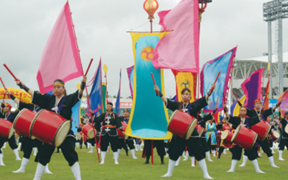
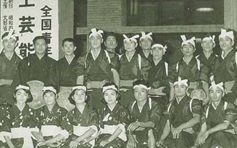

エイサー
エイサーは
沖縄県と鹿児島県奄美群島でお盆の時期に踊られる伝統芸能。この時期に現世に戻ってくる 祖先の霊を送迎するため、若者たちが歌と囃子に合わせ、踊りながら地区の道を練り歩く。 また、かつては祝儀を集めて集落や青年会の活動資金とする機能も重視され、 その金でため池を設けた例もある。
地域によってはヤイサー、エンサー、七月舞（しちぐゎちもーい）、 念仏廻り（にんぶちまーい）とも呼ばれる。 踊りを通して、 他との関係が縁となって生起することで、 五穀豊穣、大漁追福、商売繁盛、家内安全、無病息災、安寧長寿、 夫婦円満、子孫繁栄、祖先崇拝や招福祈願、厄除祈念や「ハレ」に纏わる ことなど多岐に渡り繋がりを大事しながら踊っている。
近年では太鼓を持つスタイルが多くなり、踊り自体を鑑賞するために 沖縄全島エイサーまつりをはじめとする、 各地域のエイサーを集めたイベント等も開催され、重要な観光イベントとなっている。
エイサーの歴史
東北出身の袋中上人が1603年から3年間首里に滞在して浄土宗を布教したのを契機に、 沖縄では王家や貴族の間を中心として念仏が広まった。 18世紀中頃には、托鉢や芸事を行なう「念仏にゃー」（念仏屋、にんぶちゃー）を お盆に招いて先祖の供養を行なう風習が、首里の屋敷町などで存在していたという。 当時は現代のエイサーと形式が異なり、門付歌と念仏歌だけで踊っていた。
明治以降になると、念仏の詠唱を村の若人が代行する形で庶民の間にエイサーが普及していった。 沖縄本島中北部から県内全域へ伝播して大衆化する中で、民謡などを取り込む例も増えた。 与那国島で始まったのは80年ほど前と言われている。なお、戦前は太鼓を使う例は少なく、 浴衣などの普段着姿で手ぬぐいを頭に巻くというスタイルが主流であった。 念仏にゃーの存在は大正の終わりごろにはほぼ消滅している。 戦後、エイサーは沖縄市など本島中部を中心に大きくスタイルを変えた。 旧コザ市（現在の沖縄市）主催で1956年に全島エイサーコンクールを開催。 この沖縄随一のエイサーイベントは後のエイサーの発展に多大なる影響を与えた。
当初コンクール（順位を競う）であったため、審査員や観客に魅せる(見せる)という部分に重きが置かれ、 出場する青年会は構成や隊形、衣装、パフォーマンスなどをより派手なスタイルに変化させていくことになる。 これらのエイサー文化と共に歩んできた沖縄市は2007年6月13日に「エイサーのまち」宣言をし、 地域の活性化に取り組んでいる。
一方で、名護市以北の本島北部では手踊りの伝統エイサーも続けられている。 また、沖縄本島中部のうるま市の伝統エイサーも歴史は古く、屋慶名青年会、平敷屋青年会、 赤野青年会などは100年余りの伝統がある。屋慶名エイサーの起源は明治24年（1890年）旧暦７月とされ、 1991年には生誕100年祭が行われた。また、赤野青年会が初めて本土にエイサーを紹介したとされており、
全国的には1990年代以降に沖縄県出身者が中心となって多くのエイサー団体が設立された。 また、県出身者以外の愛好者の加入や独自団体の設立も増えていると言われる。 国外で踊られた例として、アメリカ合衆国やフランスなどがある。